REFERENCIA MÉDICADr. Gustavo BounousInvestigación y desarrollo científico
IMMUNOCAL · GLUTATIÓN · CISTEÍNA BIOACTIVA
Cuando tus defensas caen, tus células piden ayuda. Devuelve a tu cuerpo su escudo natural.
Eleva tus niveles de glutatión de forma natural y respaldada por más de 40 años de ciencia médica. El complemento nutricional que fortalece tu sistema inmune y tu energía cuando más lo necesitas.
40+ añosde investigación, trayectoria y presencia internacional
60+ estudiosreferidos dentro del respaldo científico y clínico
ID 1472439acceso comercial directo para compra con beneficio
NACIMIENTO, LECHE Y CISTEÍNA
Todos los mamíferos al nacer son amamantados por sus madres.
El punto de partida biológico de la vida: el calostro, la leche materna y su relación con la cisteína bioactiva, pieza clave para que tus células fabriquen glutatión de forma natural.
01
El calostro y la leche de mamá
El calostro es una fuente rica en cisteína bioactiva consolidada, base biológica que conecta la nutrición temprana con el glutatión.
02
Cisteína: el nutriente clave
La cisteína es el aminoácido limitante indispensable para que las células sinteticen glutatión.
03
Glutatión: molécula endógena
El glutatión se produce exclusivamente dentro de cada célula; no basta con ingerirlo directamente.
04
Reservas de juventud
Durante la infancia y juventud se cuenta con niveles óptimos de glutatión, pero disminuyen progresivamente en la adultez.
05
La importancia de Immunocal
Immunocal aporta cisteína bioactiva consolidada para reponer las reservas de glutatión que se pierden con la edad y el desgaste.
Idea central: al fortalecer la disponibilidad de cisteína bioactiva, el organismo recupera su capacidad natural de producir glutatión intracelular.
El origen biológico de la cisteína bioactiva
Descubre en estos tres videos cómo la naturaleza diseñó la protección celular desde el nacimiento y cómo reponerla en la etapa adulta.
FUNDAMENTO BIOLÓGICO · 01Del calostro materno a la ciencia de la cisteína bioactiva
Comprende por qué el inicio de la vida revela el secreto para mantener células fuertes y protegidas.
NUTRICIÓN CELULAR · 02Por qué tus células necesitan cisteína para producir glutatión
Explicación clara sobre la absorción de la cisteína consolidada frente a los suplementos convencionales.
VITALIDAD Y PREVENCIÓN · 03Cómo frenar la caída natural de glutatión con la edad
Conoce el impacto de recuperar tus reservas celulares para sostener tu energía y bienestar diario.
GLUTATIÓN Y DEFENSA CELULARIInmunológico DDesintoxicante EEnergía celular AAntioxidante
Cuando los radicales libres se acumulan, aparece el estrés oxidativo.
Muchas afecciones degenerativas y el desgaste acelerado se relacionan directamente con el estrés oxidativo. El glutatión actúa como tu escudo antioxidante, desintoxicante, inmunológico y energético.
Con niveles altos de glutatión, tu sistema inmune responde con mayor fuerza y precisión.
Neutraliza toxinas, metales pesados y desechos metabólicos protegiendo órganos vitales.
Protege las mitocondrias para lograr mayor vitalidad física y menor fatiga crónica.
Es el antioxidante maestro: neutraliza radicales libres y frena el daño oxidativo.
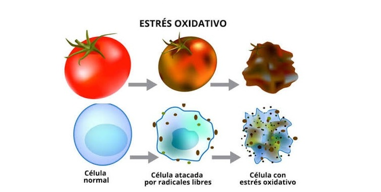
Del radical libre al daño celular
La acumulación de radicales libres oxida las células y acelera el deterioro físico y orgánico.
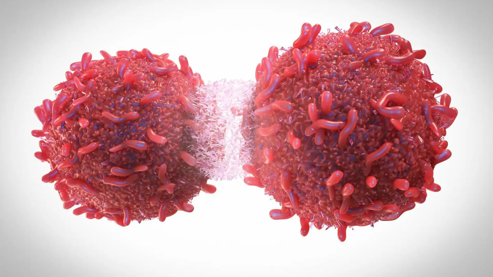
El escudo del glutatión activo
El glutatión neutraliza los radicales libres antes de que comprometan la estructura de tus células.
Niveles altos de glutatión
- Sistema inmune fortalecido
- Órganos más desintoxicados
- Menor impacto del envejecimiento
- Mitocondrias con 12–15% más energía
Niveles bajos de glutatión
- Mayor vulnerabilidad a enfermedades
- Menor defensa antioxidante
- Desgaste celular acelerado
- Fatiga persistente y lenta recuperación
Enfoque complementario: Immunocal es un complemento nutricional de apoyo para acompañar tratamientos y procesos de recuperación, nunca como sustituto del tratamiento médico.
Cómo actúa el glutatión frente al estrés oxidativo
Material audiovisual sobre el papel del glutatión como molécula maestra en la defensa inmunológica y la energía celular.
CIENCIA APLICADA · 01La molécula maestra: las 4 funciones vitales del glutatión
Descubre cómo protege tus mitocondrias, desintoxica el hígado y potencia tus defensas.
DEFENSA INMUNE · 02Estrés oxidativo vs. Protección celular: ¿cómo equilibrar tu cuerpo?
Visualiza lo que ocurre dentro de tus células cuando recuperan su capacidad antioxidante.
EVIDENCIA CIENTÍFICA, PREMIOS Y BIBLIOGRAFÍALÍNEA NOBEL1929 · 1959 · 1997 · 2011 BIBLIOGRAFÍA MÉDICALibros y compendios clínicos PUBMED / NCBIConsulta biomédica verificable PREMIO NOBEL · 1929Sir Frederick HopkinsBioquímico inglés PREMIO NOBEL · 1959Arthur KornbergBioquímico estadounidense PREMIO NOBEL · 1997Sir John WalkerQuímico británico PREMIO NOBEL · 1997Paul D. BoyerBioquímico estadounidense PREMIO NOBEL · 2011Bruce BeutlerInmunólogo y genetista estadounidense PREMIO NOBEL · 2011Jules A. HoffmannBiólogo franco-luxemburgués PREMIO NOBEL · 2011Ralph M. SteinmanInmunólogo canadiense PREMIO NOBEL · 2008 · AUTORLuc MontagnierVirólogo francés
Premios Nobel, médicos, libros y fuentes de consulta que respaldan esta ciencia.
Una trayectoria científica sólida: descubrimiento del glutatión, energía mitocondrial, protección antioxidante, inmunidad innata, experiencia clínica y bibliografía médica abierta para tu consulta.
Hitos científicos y Premios Nobel que cimentaron la comprensión del glutatión, la energía celular y la inmunidad.
Publicaciones médicas internacionales y vademécums de referencia donde se documenta el uso de Immunocal.
Acceso directo a la biblioteca médica de los Institutos Nacionales de Salud de EE. UU. para verificar estudios.
Científicos y Premios Nobel vinculados a la ciencia del glutatión
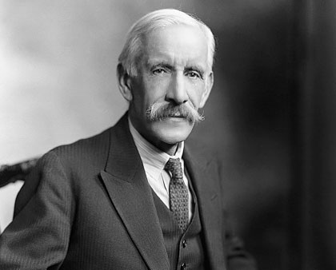
Pionero en el aislamiento y caracterización temprana del glutatión, además de aportes fundamentales al estudio de vitaminas y aminoácidos esenciales.
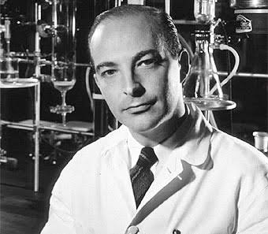
Referente en los mecanismos enzimáticos y de síntesis celular que explican cómo las células construyen y reparan sus componentes vitales.
Sus investigaciones sobre la síntesis de ATP revelaron cómo la energía mitocondrial depende de un entorno celular protegido del estrés oxidativo.
Co-descubridor del mecanismo energético de las mitocondrias, donde el glutatión actúa como protector esencial de la producción de ATP.
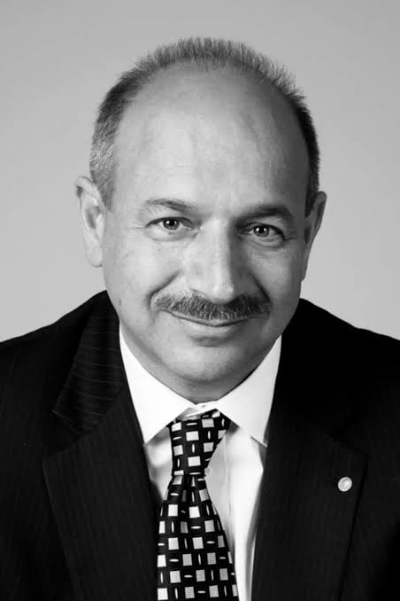
Reconocido por descifrar la activación de la inmunidad innata, primera línea de defensa del organismo donde el glutatión cumple un rol regulador.
Sus hallazgos sobre los receptores de la inmunidad innata fortalecieron la comprensión científica de la respuesta defensiva celular.
Descubridor de las células dendríticas y su papel clave en la inmunidad adaptativa, área estrechamente vinculada al equilibrio redox intracelular.
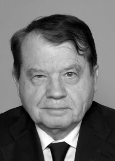
Editor de la obra Oxidative Stress in Cancer, AIDS, and Neurodegenerative Diseases, cuyo capítulo 42 analiza el papel de Immunocal en el estrés oxidativo.
Investigadores pioneros de Immunocal
INVESTIGACIÓN Y DESARROLLODr. Gustavo Bounous
Médico investigador de la Universidad McGill (Canadá), líder del equipo que descubrió la fórmula de cisteína consolidada de Immunocal.
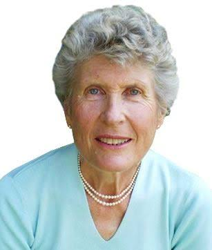
INMUNOLOGÍA Y RESPALDODra. Patricia Kongshavn
Inmunóloga de la Universidad McGill, co-investigadora clave en la validación científica del impacto de Immunocal sobre el sistema inmune.
Libros y compendios médicos de referencia
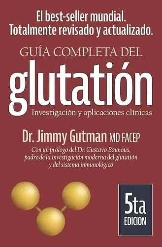
OBRA DE REFERENCIAGuía completa del glutatión
Escrita por el Dr. Jimmy Gutman con prólogo del Dr. Gustavo Bounous; compila aplicaciones clínicas y estudios sobre el glutatión.
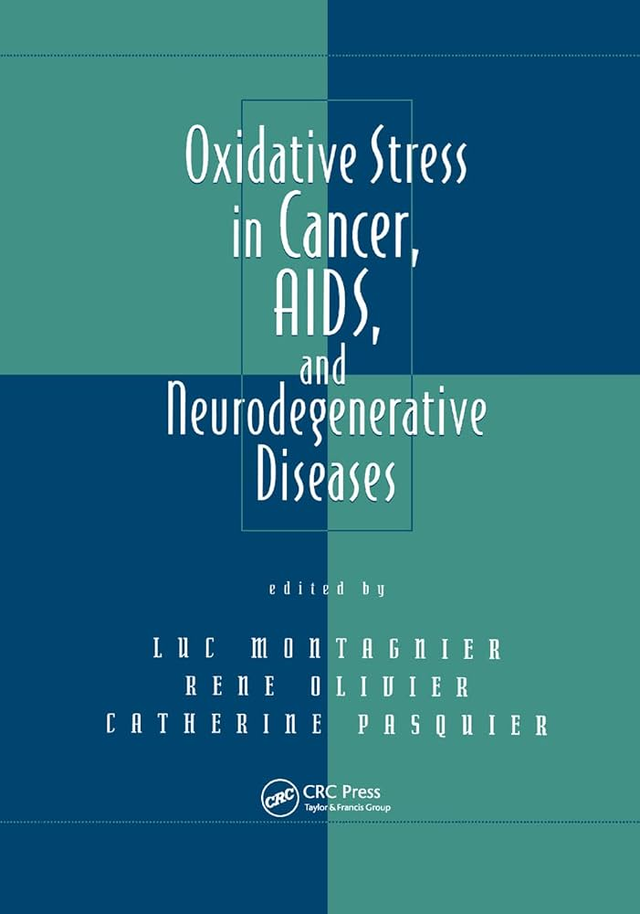
PUBLICACIÓN MÉDICAOxidative Stress in Cancer, AIDS, and Neurodegenerative Diseases
Obra editada por el Dr. Luc Montagnier que dedica su capítulo 42 a la evidencia científica de Immunocal.
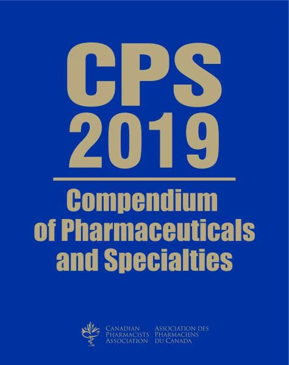
COMPENDIO FARMACÉUTICOCPS · Compendium of Pharmaceuticals and Specialties
Referencia oficial de prescripción médica en Canadá donde figura la monografía de Immunocal.
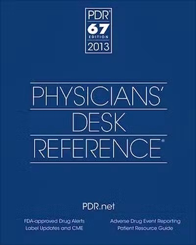
VADEMÉCUM CLÍNICO (EE. UU.)Physicians’ Desk Reference (PDR)
Manual de consulta utilizado por médicos en Estados Unidos que incluye la ficha técnica de Immunocal.
PubMed: verifica la evidencia en más de 40 millones de citas biomédicas
Consulta de forma abierta y transparente los artículos científicos publicados en la Biblioteca Nacional de Medicina de EE. UU.
- Búsqueda recomendada: glutathione (más de 180,000 publicaciones)
- Búsqueda recomendada: Immunocal (estudios clínicos y preclínicos)
- Filtra por áreas: estrés oxidativo, inmunología, energía mitocondrial o neurología
Respaldo científico e historia médica en video
Conoce la trayectoria de los investigadores, Premios Nobel y publicaciones médicas que validan esta propuesta.
EVIDENCIA Y AUTORIDADDe los Premios Nobel a PubMed: la ciencia detrás de Immunocal
Recorrido por los hitos médicos, libros de referencia y estudios clínicos que sustentan el producto.
PROTOCOLO Y POSOLOGÍAMES 1 · FASE DE CHOQUEDistribución diaria MESES 2, 3 Y 4 · FASE INTENSIVADistribución diaria MESES 5 Y 6 · CONSOLIDACIÓNDistribución diaria DESDE EL MES 7 · MANTENIMIENTODistribución diaria
Guía práctica de consumo progresivo por etapas.
Distribución sugerida de sobres por etapa para acompañar procesos de recuperación intensiva y posterior mantenimiento celular diario.
Resumen rápido: Mes 1: 6 sobres diarios. Meses 2 al 4: 6 sobres diarios. Meses 5 y 6: 4 sobres diarios. Desde el mes 7: 3 sobres diarios para mantenimiento.
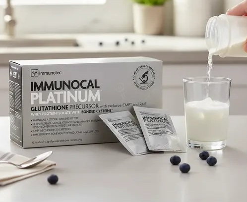
6 sobres
- Antes del desayuno: 2 Regular
- 11:00 AM: 2 Regular
- 5:00 PM: 2 Regular
6 sobres
- Antes del desayuno: 1 Regular + 1 Platinum
- 11:00 AM: 1 Regular + 1 Platinum
- 5:00 PM: 2 Regular
4 sobres
- Antes del desayuno: 1 Regular + 1 Platinum
- 11:00 AM: 1 Regular + 1 Platinum
3 sobres
- En ayunas: 1 Regular + 1 Platinum + 1 Verde (Booster)
- Continúa como fase de mantenimiento
Nota importante: este protocolo refleja pautas referenciales compartidas en experiencias de consumo. Immunocal es un complemento nutricional natural y no sustituye tratamientos, medicamentos ni indicaciones del médico tratante.
HISTORIAS DE VIDA Y TESTIMONIOS DE SALUD
Experiencias reales de acompañamiento y recuperación celular.
Testimonios compartidos como experiencias personales de bienestar, siempre bajo un enfoque de máximo respeto por la medicina convencional y las indicaciones del médico tratante.
AVISO DE TRANSPARENCIA Y ÉTICA MÉDICA
Rigurosidad y respeto profesional antes de ver los testimonios.
Cada testimonio es una vivencia individual. Immunocal actúa como un complemento de nutrición celular y en ningún caso reemplaza diagnósticos, fármacos ni terapias médicas prescritas.
- Descargo de responsabilidadLos testimonios reflejan experiencias individuales. Los resultados pueden variar de una persona a otra.
- Respeto a la medicina tradicionalLa ruta hacia la salud comienza por respetar el diagnóstico y cumplir las recomendaciones del médico tratante.
- Complemento nutricionalImmunocal es un apoyo de nutrición celular, no un sustituto de medicamentos o terapias clínicas.
- Principio de acción biológicaAporta cisteína bioactiva para que las propias células eleven sus niveles de glutatión y apoyen su reparación.
Historias de vida y experiencias compartidas
Reproduce directamente cada testimonio para conocer cómo la nutrición celular ha acompañado distintos procesos de bienestar.
TESTIMONIO · CASO 01Recuperación de energía y apoyo nutricional en procesos complejos
Relato personal sobre el fortalecimiento físico y la vitalidad durante el acompañamiento médico.
TESTIMONIO · CASO 02Calidad de vida y respuesta inmunológica tras elevar el glutatión
Experiencia real de bienestar progresivo integrando cisteína bioactiva a la rutina diaria.
TESTIMONIO · CASO 03Vitalidad, descanso y bienestar integral en la etapa adulta
Cómo el soporte antioxidante contribuye a detener el desgaste físico y recuperar el ánimo.
TESTIMONIO · CASO 04Acompañamiento familiar y resiliencia celular con Immunocal
Testimonio de constancia con el protocolo de sobres y mejora sostenida en el día a día.
ASISTENTE VIRTUAL ESPECIALIZADO
Consulta con Dr. Glutatión & MOM Cisteína.
¿Tienes dudas sobre cómo funciona el glutatión en tus células, qué diferencia a Immunocal de otros suplementos o cómo aplicar tu descuento?
Orientación inmediata: escribe tu pregunta o selecciona un tema frecuente para recibir información clara, basada en la evidencia científica del sitio.
Dr. Glutatión IA
PubMed · Ciencia · GuíaAsistente en línea · Respuesta inmediata
¡Hola! Soy el asistente de Dr. Glutatión & MOM Cisteína. Estoy aquí para resolver tus dudas sobre el glutatión, la cisteína bioactiva, Immunocal, protocolos de consumo o cómo comprar con el 25% de descuento. ¿En qué te puedo orientar?
Orientación informativa. No diagnostica, no prescribe y no reemplaza la valoración de un profesional de la salud.
CIERRE COMERCIAL
Adquiere tu producto directo con el ID de distribuidor.
Copia el código oficial, ingresa a la tienda oficial de Immunotec y realiza tu pedido con el beneficio preferencial asignado.
Usa este ID al momento de tu registro o compra para activar el descuento especial del 25%.
ID OFICIAL DE DISTRIBUIDORCompra con ID
Copia este código con un clic para aplicarlo en la tienda oficial de Immunotec.
1472439
¿Necesitas ayuda con tu pedido o envío en tu país? Escríbenos directo por WhatsApp para acompañarte paso a paso.
Alcance internacional y modelo de adquisición
Conoce cómo funciona la plataforma global de Immunotec para adquirir tus productos con beneficio preferencial o desarrollar el proyecto.
GUÍA COMERCIALCómo adquirir Immunocal con beneficio preferencial y alcance global
Explicación del respaldo internacional, logística en más de 14 países y ventajas de compra con ID.